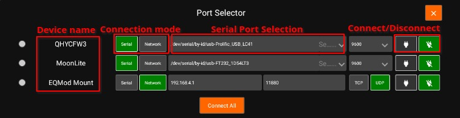

Port Selector
Your equipment profile may contain one or more serial port and/or network-enabled devices. Before establishing connection to such devices for the first time, StellarMate Port Selector tool helps you to assign the appropriate ports and addresses for each. Serial devices may include mounts, focuser, and filter wheels using USB-to-Serial adapters. You need to know the baud rate for the device as by default it is set to 9600.
|
|
NOTE: PORT SELECTOR IS NOT APPLICABLE TO PURE USB DEVICES SUCH AS CAMERAS. |
For networked devices over Ethernet or WiFi, you need to supply the device host name or IP address and the device port. This information is usually supplied by your device manufacturer. It is important to ensure that all networked devices are within the same network as StellarMate. For example, if StellarMate is operating in hotspot mode (IP 10.250.250.1) then your network-enabled device must be connected to the same hotspot network and have an IP address in this range (e.g. 10.250.250.5). On the other hand, when StellarMate is operating in infrastructure mode (i.e. it is connected to an external WiFi network like Home WiFi), then the other network-enabled devices must be connected to the same network in order for all devices to talk to each other.
The Port Selector dialog can be accessed as any time by click on the Port Selector button. When creating an equipment profile for the first time, it is automatically opened so you can configure the ports before establishing connection to your devices either individually or via clicking Connect All buton.
You can specify the ports for serial and network devices using the Port Selector.
The serial ports can be selected from the drop-down. The addresses are unique to each connected device (similar to COM1, COM2..etc on Windows OS) but the automatically generated port names usually do not tell you which device they are connected to. When you have multiple serial devices, it can be tricky to find out which is which. StellarMate automatically tries to connect to the serial devices and attempts handshake with each device, but this might lead to multiple drivers trying to talk at the same time to multiple devices which might lead to traffic collision.
Therefore, it is better to select the correct ports from the beginning. This is only required once in the initial setup. One method to know a device's serial port is simply by connecting one device at a time via USB, and then check the serial port that is displayed in the drop-down. Make note of this port name and then connect the next device and check again, the new serial port in the drop-down should belong to the 2nd device. Now you know for certain the ports for the connected devices.
Once the ports and network settings are selected, press Connect All to establish connection.
Connection Status
- Green: device is connected.
- Yellow: connecting to device.
- Red: connecting to device failed.
Connection Mode
- Serial: For mounts, filter wheels, and focusers that are connected via a Serial-to-USB adapter. To connect to serial devices, you need to select the port and baud rate. StellarMate provides the detected system ports in a drop-down menu to select from, but you can also enter your own port manually.
- Network: For any network-enabled device (e.g. Mounts over WiFi like SkyWatcher AZ-Gti).To connect to networked devices, ensure they are connected to the same network where StellarMate is connected to. You need to enter the host-name or preferably the IP address of the device in addition to the connection port and connection type (TCP or UDP).
Baud Rate: Set the devices baud rate
Connect All: Connects to all the devices and closes the Port Selector

When connecting a serial device, you can specify the port by selecting from the drop-down or typing it in the text field
For network devices, you have to specify the host-name or IP of the device and the port. Also you can choose the network type (TCP/UDP).